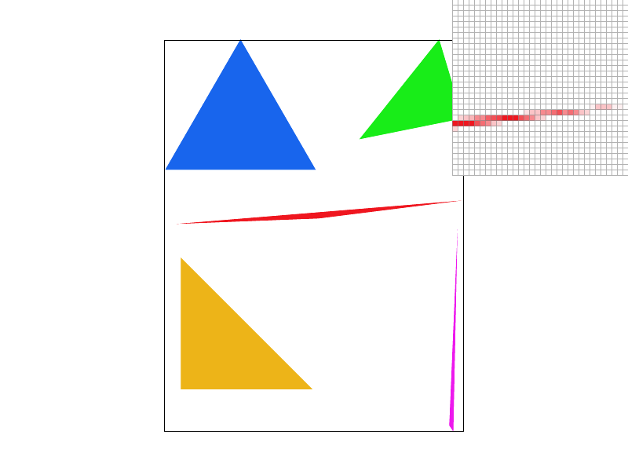

Overview
Give a high-level overview of what you implemented in this project. Think about what you've built as a whole. Share your thoughts on what interesting things you've learned from completing the project.
Section I: Rasterization
Part 1: Rasterizing single-color triangles
The first step in rasterizing a triangle is to determine the smallest possible rectangular bounding box that contains the triangle. The four corners of this box can be computed as (x_min, y_min), (x_min, y_max), (x_max, y_min) and (x_max, y_max). x_min and x_max are the minimum and maximum x-coordinates of the three corners of the triangle respectively (and similarly for y_min and y_max). Since pixels are only present at coordinates that are integers, we compute the floor of x_min and y_min and the ceiling of x_max and y_max to get the final bounding box. Then for every pixel within this bounding box, we test whether it is inside the triangle and thus must be filled with the triangle's color. Since the center of every pixel is actually at an integer plus (.5,.5), we actually perform the test at every pixel using its center's coordinates. To test if a given point is inside the triangle, we can use the following algorithm: Let the coordinates of the triangle's corners be p0 = (x0, y0), p1 = (x1, y1) and p2 = (x2, y2) and let the coordinates of the point we are testing be p = (x, y).
- Since the ordering of the triangle's corners is unknown (can be clockwise or anti-clockwise), we first need to determine the side of the edge from p0 to p1 that p2 lies in. This can be determined using the line test. The line test is given by:
L(p2, p0, p1) = -(p2.x - p0.x)*(p1.y - p0.y) + (p2.y - p0.y)*(p1.x - p0.x).
If L(p2, p0, p1) < 0, p2 is above the line from p0 to p1 and if L(p2, p0, p1) > 0, it is below the line. - Now, point p is inside the triangle (or on the border) if (L(p, p0, p1) * L(p2, p0, p1)) >= 0 and (L(p, p1, p2) * L(p2, p0, p1)) >= 0 and (L(p, p2, p0) * L(p2, p0, p1)) >= 0, else it is outside the triangle.

Part 2: Antialiasing triangles
To perform supersampling, we first resize the sample buffer so as to be a 1D vector of size width * height * sample_rate (where width and height are the width and height of the frame buffer). If we think of the sample buffer as a 2D matrix, it would be (width * sqrt(sample_rate)) x (height * sqrt(sample_rate)). To perform supersampling, we fill this bigger sample buffer and then fill the framebuffer by averaging over the colors of the supersampled pixels that correspond to any given real pixel (the sample_rate defines the number of supersampled pixels per real pixel). Since we sample at many more points per unit area during supersampling compared to conventional rasterization, we get reduced aliasing (including effects such as moire). Averaging over the supersampled pixels to get the real pixel's color produces smoother transitions, thereby reducing jaggies.To antialias triangles, we increase the number of samples in the bounding box by the sample_rate i.e. if there are n real pixels in the bounding box, we instead sample at (sample_rate * n) supersampled pixels. This means that the distance between samples is reduced. In conventional rasterization, we check if the centre of a pixel inside the bounding box, located at some integer coordinates (x, y) + (.5, .5), is inside the triangle. However, during supersampling, we consider sample_rate supersampled pixels per real pixel, located at:
(x, y) + (1/(sqrt(sample_rate) + 1), 1/(sqrt(sample_rate) + 1)),
(x, y) + (1/(sqrt(sample_rate) + 1), 2*1/(sqrt(sample_rate) + 1)),
(x, y) + (1/(sqrt(sample_rate) + 1), 3*1/(sqrt(sample_rate) + 1)),
...
(x, y) + (1/(sqrt(sample_rate) + 1), sqrt(sample_rate)*1/(sqrt(sample_rate) + 1)),
(x, y) + (2*1/(sqrt(sample_rate) + 1), 1/(sqrt(sample_rate) + 1)),
(x, y) + (2*1/(sqrt(sample_rate) + 1), 2*1/(sqrt(sample_rate) + 1)),
(x, y) + (2*1/(sqrt(sample_rate) + 1), 3*1/(sqrt(sample_rate) + 1)),
...
(x, y) + (2*1/(sqrt(sample_rate) + 1), sqrt(sample_rate)*1/(sqrt(sample_rate) + 1)),
...
(x, y) + (sqrt(sample_rate)*1/(sqrt(sample_rate) + 1), 1/(sqrt(sample_rate) + 1)),
(x, y) + (sqrt(sample_rate)*1/(sqrt(sample_rate) + 1), 2*1/(sqrt(sample_rate) + 1)),
(x, y) + (sqrt(sample_rate)*1/(sqrt(sample_rate) + 1), 3*1/(sqrt(sample_rate) + 1)),
...
(x, y) + (sqrt(sample_rate)*1/(sqrt(sample_rate) + 1), sqrt(sample_rate)*1/(sqrt(sample_rate) + 1)),
and determine if each of these coordinates is inside the triangle using line tests. If so, the entries corresponding to these supersampled pixels coordinates in the sample buffer are colored. Finally, we fill the framebuffer by averaging over the colors of the supersampled pixels that correspond to any given real pixel.
We also had to slightly modify the fill_pixel function to allow for point and line rasterization. If the fill_pixel function is not fed supersampled pixels coordinates and is instead fed real pixel coordinates (indicated by a parameter), then all the sample_rate supersampled pixels corresponding to the real pixel are filled. So, when the framebuffer is filled, the real pixel will have the correct color.
The results obtained using supersampling are shown below. We see that as the sample_rate is increased, the amount of aliasing goes down. This is evidenced by fewer jaggies since averaging over the supersampled pixels to get the real pixel's color produces smoother transitions, thereby reducing jaggies.
|
|
|

|
Part 3: Transforms
In this section, we implemented translate, rotate and scale according to the SVG spec by defining the 3 x 3 matrices in transforms.cpp appropriately. The svg/transforms/robot.svg file rendered as expected.
We decided to create a robot that's waving at traffic for "something more interesting". To this end, we rotated one segment of the robot's leg by 30 degrees and the bottom segment by -30 degrees. We also rotated the outer part of the left arm by 45 degrees and modified the translate to make things line up. Below is the final result.
Section II: Sampling
Part 4: Barycentric coordinates
A barycentric coordinate system is one where the coordinate of a point can be represented by weights placed at the three vertices of a triangle. If a point is within a triangle, then all of the weights (alpha, beta and gamma) are positive, and if is outside they may be negative.
If we are given three vertices V1, V2 and V3, we can find alpha, beta and gamma that satisfies:
- V = V1 (alpha) + V2 (beta) + V3 (gamma)
- alpha + beta + gamma = 1
Barycentric coordinates enable us to interpolate across a triangle. If we create an svg file that plots a single triangle with one red, one green, and one blue vertex, it produces a smoothly blended color triangle.
Here is a png screenshot of svg/basic/test7.svg with default viewing parameters and sample_rate 1.

Part 5: "Pixel sampling" for texture mapping
Pixel sampling is a texture mapping method. To draw a textured triangle, we need both the cartesian coordinates of the triangle's corners and the coordinates of the corners that correspond to positions in a given a texture file. This texture file defines a space of uv-coordinates with each point being assigned a color. However, since a texture file is of limited resolution, we only have the colors assigned to a sample of points in the uv-space. For pixel sampling, the resolution of the texture file must be the same as the resolution of the image. Texture mapping is the task of computing the uv-coordinates of an image pixel given the uv-coordinates of the triangle corners and then using the sample of points in the uv-space to assign a color to the image pixel.The uv-coordinates of an image pixel are computed using barycentric coordinates. First, the barycentric coordinates of a pixel inside the triangle are computed. Then, the coordinates are used as weights to compute the weighted average of the uv-coordinates of the corners. This weighted average is the uv-coordinate of the pixel.
Next, we need to compute the color of the pixel's uv-coordinate. This can be done in two ways - using the nearest neighbor or bilinear interpolation. Nearest neighbor is simple - it just assigns the color of the sample closest to the given uv-coordinate. The nearest neighbor of (u, v) can be computed as (round(u), round(v)). However, nearest neighbor can introduce blocking artifacts as can be seen in the examples. Bilinear interpolation leads to fewer aliasing artifacts as it ensures smooth transitions between colors. It works by first getting the uv-coordinates of the four nearest neighbors. Then, it linearly interpolates the colors of these four nearest neighbours using the calculations shown in the figure below (from the lecture slides).
Now we can use the pixel inspector to find a good example of where bilinear sampling clearly defeats nearest sampling. Here, we show and compare four png screenshots using nearest sampling at 1 sample per pixel, nearest sampling at 16 samples per pixel, bilinear sampling at 1 sample per pixel, and bilinear sampling at 16 samples per pixel.

The relative difference between nearest and bilinear sampling can be seen in these images where there is lots of "noise"/high contrast. In the bilinear sampling case, lines/edges are smoother - since there is a lot of details, filtering with bilinear interpolation can help make things look smoother. Supersampling can also help get rid of the "jaggies", as we can see in the 16 samples/pixel case - for both nearest and bilinear sampling they are smoother.
Part 6: "Level sampling" with mipmaps for texture mapping
Level sampling is a way through which we can set our texture appropriately in the case where where textures are minified. To this end for minification and maginification, we can use mipmaps where the texture is downsampled. Mipmaps are essentially a set of layers of images where each subsequent layer represents a lower resultion -- we want to pick the level which is closest to the screen sampling rate.
To implement this for texture mapping, I first cacluated the barycentric coordinates of (x + 1, y) and (x, y + 1) to find du/dx and dv/dx. I then found L, which is the max of sqrt((du/dx)^2 + (dv/dx)^2) and sqrt((du/dy)^2 + (dv/dy)^2). I then used this to find the mipmap level, D = log2(L). I mades sure to scale up the difference vectors accordingly by the width and height of the full-resolution texture image.
Pixel sampling has the lowest memory and computation usage compared to the rest of the techniques, since it only requires dealing with level 0 mipmaps. Nearest neighbor is faster than biliear interpolation for pixel.
Level sampling could take up more space/memory than pixel sampling due to having to store multiple levels. For level sampling, L_LINEAR takes up the most memory space since it involves mulitple levels. L_ZERO and L_NEAREST are tied for second, since they both only sample from a single mipmap level. For computation time, L_LINEAR also takes the longest since again it involves sampling from multiple levels. L_NEAREST follows since it involves determining which level to sample from, and L_ZERO is the fastest.
Supersampling should have the highest memory usage and be the slowest. Supersampling increases the number of samples. The number of samples impacts computation and memory usage directly - as you increase the number of samples, you decrease speed and increase memory usage. Supersampling is best for antialiasing, followed by bilinear level sampling, nearest level sampling, level 0 sampling, bilinear pixel sampling and nearest pixel sampling in that order.
Section III: Art Competition
If you are not participating in the optional art competition, don't worry about this section!